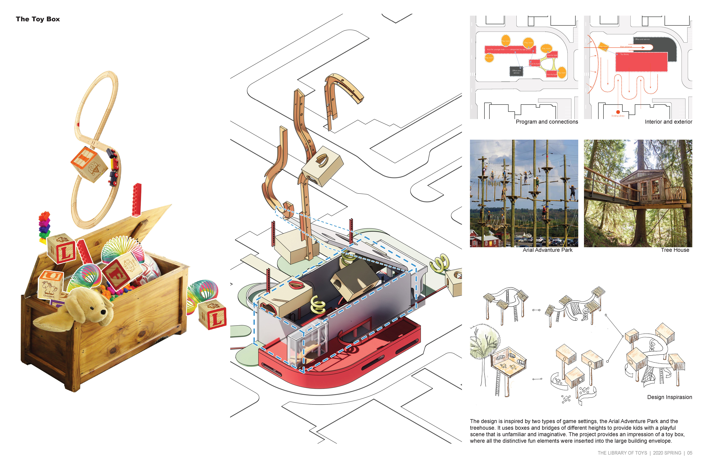

The Library of Toys
Ann Arbor toy library
2021 Fall, University of Michigan,
Instructor, Jonathan Rule, Individual work
Location, Ann Arbor, Michigan

The design aims to create a toy library adjacent to the old library where kids and young people can borrow toys and have fun.
The main reason why we need a toy library is that Ann Arbor is a city with a great population of young people and students.
Besides, the sharing of toys has great benefits in terms of sustainability, lowering family budget, and encouraging communication between kids.
The library is a colorful space with different small boxes of play and exhibition space inserted within a large volume.
And kids can run around rooms of different hight and scale and enrich their imagination in this distinctive space of games and toys.